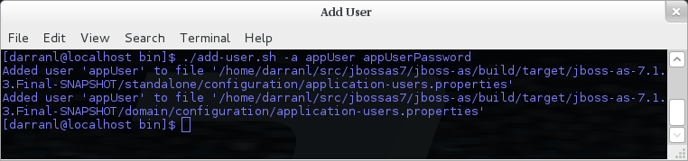

For use with the default configuration we supply a utility add-user which can be used to manage the properties files for the default realms used to store the users and their roles.
The add-user utility can be used to manage both the users in the ManagementRealm and the users in the ApplicationRealm, changes made apply to the properties file used both for domain mode and standalone mode.
After you have installed your application server and decided if you are going to run in standalone mode or domain mode you can delete the parent folder for the mode you are not using, the add-user utility will then only be managing the properties file for the mode in use.
The add-user utility is a command line utility however it can be run in both interactive and non-interactive mode. Depending on your platform the script to run the add-user utility is either add-user.sh or add-user.bat which can be found in {jboss.home}/bin.
This guide now contains a couple of examples of this utility in use to accomplish the most common tasks.
Adding a User
Adding users to the properties files is the primary purpose of this utility.
The server caches the contents of the properties files in memory, however the server does check the modified time of the properties files on each authentication request and re-load if the time has been updated - this means all changes made by this utility are immediately applied to any running server.
A Management User
The default name of the realm for management users is ManagementRealm, when the utility prompts for the realm name just accept the default unless you have switched to a different realm.
Interactive Mode

Here we have added a new Management User called adminUser, as you can see some of the questions offer default responses so you can just press enter without repeating the default value.
For now just answer n or no to the final question, adding users to be used by processes is described in more detail in the domain management chapter.
Interactive Mode
To add a user in non-interactive mode the command ./add-user.sh {username} {password} can be used.

If you add users using this approach there is a risk that any other user that can view the list of running process may see the arguments including the password of the user being added, there is also the risk that the username / password combination will be cached in the history file of the shell you are currently using.
An Application User
When adding application users in addition to adding the user with their pre-hashed password it is also now possible to define the roles of the user.
Interactive Mode

Here a new user called appUser has been added, in this case a comma separated list of roles has also been specified.
As with adding a management user just answer n or no to the final question until you know you are adding a user that will be establishing a connection from one server to another.
Interactive Mode
To add an application user non-interactively use the command ./add-user.sh -a {username} {password}.

Non-interactive mode does not support defining a list of users, to associate a user with a set of roles you will need to manually edit the application-roles.properties file by hand.
Updating a User
Within the add-user utility it is also possible to update existing users, in interactive mode you will be prompted to confirm if this is your intention.
A Management User
Interactive Mode

Interactive Mode
In non-interactive mode if a user already exists the update is automatic with no confirmation prompt.
An Application User
Interactive Mode

On updating a user with roles you will need to re-enter the list of roles assigned to the user.
Interactive Mode
In non-interactive mode if a user already exists the update is automatic with no confirmation prompt.
Community Contributions
There are still a few features to add to the add-user utility such as removing users or adding application users with roles in non-interactive mode, if you are interested in contributing to WildFly development the add-user utility is a good place to start as it is a stand alone utility, however it is a part of the AS build so you can become familiar with the AS development processes without needing to delve straight into the internals of the application server.